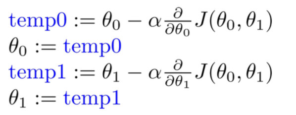
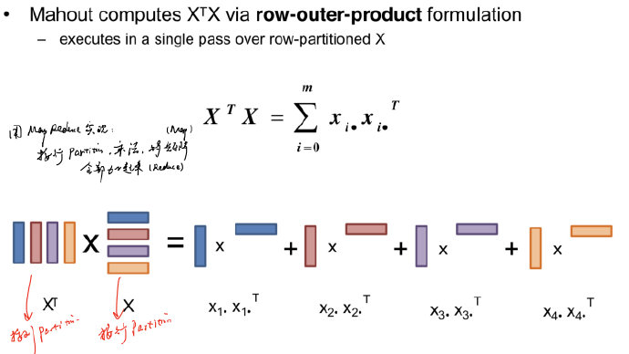

机器学习系统
机器学习三要素
- 模型
- 用参数来构造描述客观世界的数学模型
- 线性回归模型
- 对于参数很多的模型，还需要考虑参数容错（LDA）
- CNN/Tensorflow -> 适用于从参数入手
- 策略
- 基于已有的观测数据进行经验风险最小化
- 选择什么参数在代价函数中是最好的？（例如，训练数据的误差平方和）
- 对于数据之间有关联的算法（PageRank） -> 适用于从数据入手
- 算法
- 优化问题的计算求解
- 适用于Model较为简单，数据没有关联性 -> 适用于从计算入手
- 梯度下降
- 要求必须每次迭代同时更新参数
- 与BSP模型很像
- 在某些算法中可以异步更新
- 
- 要求必须每次迭代同时更新参数
机器学习系统的设计思路
机器学习vs机器学习系统
- 机器学习
- 强调机器学习方法的精确程度
- 评价标准:accuracy/precision/recall
- 机器学习系统
- 强调机器学习过程的运算速度
- 评价标准:performance
| 机器学习 | 机器学习系统 |
|---|---|
| 模型 | 参数 |
| 策略 | 数据 |
| 算法 | 计算 |
- 应该从哪个角度来设计机器学习系统？
- 考虑模型的复杂度/数据关联性/参数个数
- 分别从参数/数据/计算入手
机器学习中的“图”
- 训练模型可以构成一张图
- 顶点:参数
- 边:参数
- 训练数据可以构成一张图
- 顶点:数据点
- 边:数据点之间的关联性
- 训练过程可以构成一张图
- 顶点:数据处理过程中的计算
- 边:计算结果
因此，机器学习算法理论上来说也可以通过图计算系统实现
对于之前提到的梯度下降，可以通过两方面来看：
- 从计算入手
- 由于数据没有关联，因此从计算入手是很直接的方式
- 从数据入手
- 将训练数据项看作一个顶点，构成一张无边的图
- 只需要每个顶点同时计算（compute），不需要进行sendMessage，最后使用aggregator更新参数
- 从参数入手
- 考虑局部梯度下降和局部参数调整
- 最后再更新全局参数
设计思路
- 以计算为中心
- Mahout
- SystemML
- 以数据为中心
- GraphLab
- PowerGraph
- GraphX
- 以参数为中心
- Parameter Server
- TensorFlow
以计算为中心的机器学习系统
Mahout简介
- 最开始是作为Hadoop的机器学习库
- 使用map和reduce实现所有机器学习算法
- MapReduce模型不适合做机器学习
- 执行很慢，尤其是迭代过程
- 编程模型让代码很难写和调试
- 缺乏声明式/缺乏join操作
- 机器学习系统编程环境
- R/Matlab-like semantics
- Modern programming language qualities
- Scalability
机器学习DSL
DSL：Domain-Specific Language
Scala DSL
- Declarativity!
- Algebraic expression optimizer for distributed linear algebra（优化后送到各种引擎）
- provides a translation layer to distributed engines
- supports Apache Spark
- support Apache Flink
底层引擎及优化
Runtime & Optimization
- Execution is defered, user composes logical operators
- Computational actions implicitly trigger optimization (= selection of physical plan) and execution
Optimization example

首先将矩阵按照行partition，再对每一行进行矩阵运算得到一个新的矩阵，再将新的矩阵按行parition存起来，这样对相同的一行相加就得到了计算结果的矩阵。
对于slim矩阵，可以不在最后做partition（因为最终的矩阵很小）